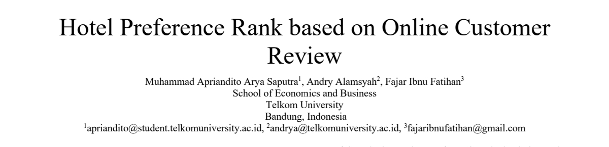
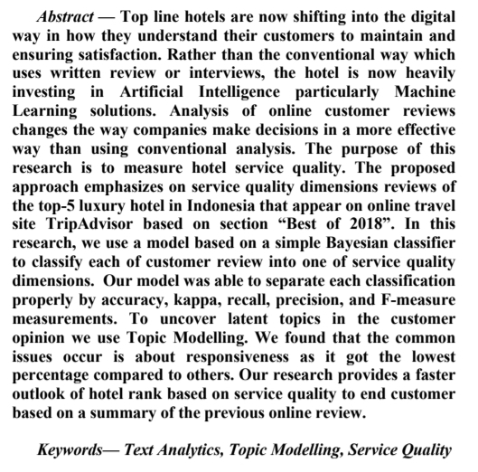

Hotel Preference Rank based on Online Customer Review
Learning Forum
XMA
Market Research Nutrifood
Journal Title

- Andry Alamsyah: Presiden AIDI (Asosiasi Ilmuwan Data Indonesia).
- Apriandito: Sekjen AIDI dan Admin Komunitas R Indonesia.
Abstract

Latar Belakang
User-Generated-Content (UGC) adalah konten atau data yang dibuat oleh konsumen secara mandiri di internet. Bentuk UGC biasanya berupa customer feedback seperti reviews dan ratings.
Customer feedback adalah sumber informasi esensial yang bisa digunakan untuk meng-improve layanan dari industri jasa.
Top line hotels are now shifting into the digital way in how they understand their customers to maintain and ensuring the satisfaction. Rather than the conventional way which uses written review or interviews, the hotel is now heavily investing in Artificial Intelligence particularly Machine Learning solutions.
Metode Penelitian
Data dan Analisa
The proposed approach emphasizes on SERVQUAL reviews of top-5 luxury hotels in Indonesia that appear on an online travel site called www.tripadvisor.com. The top-5 luxury hotel in Indonesia is based on section “Best of 2018” in TripAdvisor website.
Mereka mengumpulkan 7.259 reviews untuk kemudian dilakukan text analysis seperti:
- Naive Bayes Classifier untuk melalukan text classification.
- LDA Topic Modelling.
Metode Penelitian
Pre Processing
Sebelum melakukan text analysis, perlu dilakukan tiga hal berikut ini:
- Tokenization; Tokenize serves to remove all non-letter characters and to divide a text into small, meaningful elements such as sentences and words.
- Stemming; Stem is a process to convert the word to its original word.
- Filtering; Filter stop words serves to eliminate unnecessary words in sentence.
Text Classification
Dikumpulkan data perhotel, lalu dibagi menjadi train dataset dan test dataset dengan aturan 70-30. Kemudian dibuat model untuk mengklasifikasi lima dimensi.

Goodness of Fit Model
Seberapa bagus model text classification dihitung dari beberapa parameter. Dimulai dari membuat confusion matrix sebagai berikut:

Goodness of Fit Model
\[Recall = \frac{TP}{TP + FN}\]
\[Precision = \frac{TP}{TP + FP}\]
\[Accuracy = \frac{TP + TN}{TP + FP + TN + FN}\]
\[Kappa = \frac{P(A) - P(E)}{1-P(E)}\]
Kappa is used to measure agreement between each pair of annotators in which the annotator is used to assess the making of a text classification method.
Model Evaluation Results

Model Classification Results

Topic Modelling Result
- Mandapa Hotel: the service by the staff.
- Komaneka Hotel: the pool in the villa.
- Viceroy Hotel: the breakfast at the restaurant and the spa.
- Katamama Hotel: the staff breakfast and Seminyak.
- Jamahal Hotel: the beach pool and jamahal.
Conclusion
- In this research, data classification is capable to separate each service quality dimension properly. It is proven by the percentage of Accuracy, Kappa, Recall, Precision, and FMeasure.
- To uncover latent topics in the opinion author employ topic modelling.
- We found in each hotel, the common issues occur is about responsiveness as this dimension got the lowest percentage compared to other dimensions.
- For each hotel the issues are varied.
- Mandapa got the lowest percentage for responsiveness.
- Komaneka is low in the empathy.
- Viceroy the assurance needs to be improved.
- Katamama and Jamahal got the same issue in which low in responsiveness as well.
- After knowing the lowest dimension of each hotel, we can relate to the topic mostly discuss in each hotel from the topic of review that we have uncovered.